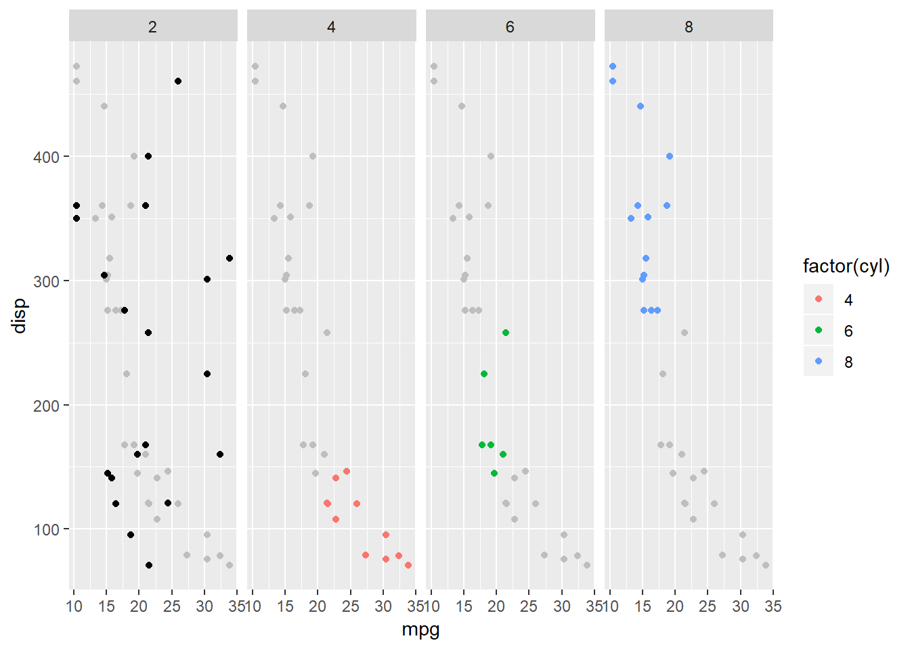
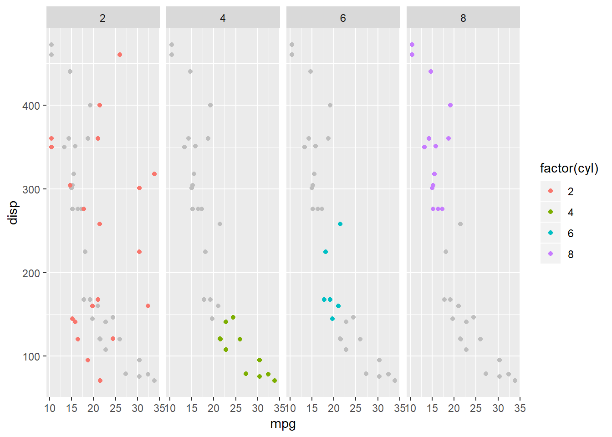
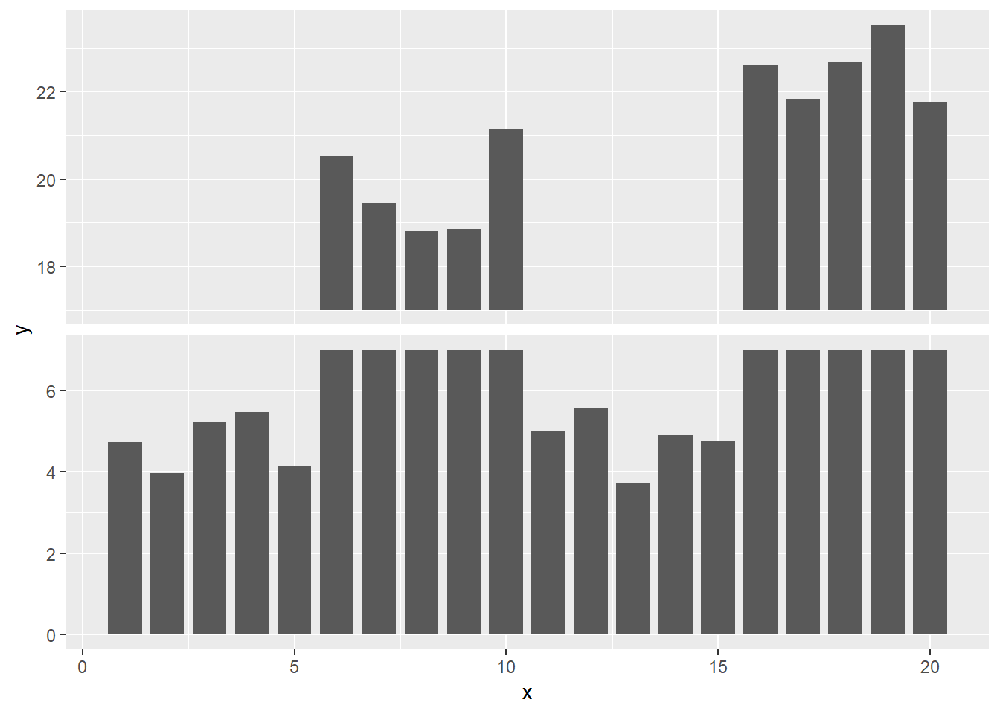

Chapter 6 不一样的分面
分面（facet）是将数据分解成多个子集，对各个子集分别进行作图，并联合进行展示。比如我们所熟知的数据iris和mtcars中，iris中有三个物种，而mtcars中的车有4、6和8个轮子的。我们可以按照这些分类变量，对数据进行切割作图。比如：
library(ggplot2)
ggplot(mtcars, aes(mpg, disp)) +
geom_point() + facet_grid(. ~ cyl)ggplot2提供了facet_grid()和facet_wrap()两个函数，来实现分面可视化。上面的示例向我们展示了分面的用法，它提供给我们以纵向或横向的形式比较不同的类别，这里比较一个变量cyl（轮子数）中的三个元素，这是分面最常用的用法，同一变量中不同的取值，对数据进行切割，以横向或纵向比较，比如不同物种中某个相同的特征进行比较，按照月份切割可视化一年的数据，机器学习中训练集和测试集的比较。
6.1 背景数据
ggplot(mtcars, aes(mpg, disp)) +
geom_point(data = mtcars[, -2], color = 'grey') +
geom_point(aes(color = factor(cyl))) + facet_grid(. ~ cyl)6.2 特定的分面
d <- data.frame(mpg=20, disp=280, cyl=6, label="额外的数据")
ggplot(mtcars, aes(mpg, disp)) +
geom_point(data = mtcars[, -2], color = 'grey') +
geom_point(aes(color = factor(cyl))) + facet_grid(. ~ cyl) +
geom_point(data = d, shape = 2, size=10, color = 'red') +
geom_text(aes(label=label), data = d, size=5)6.3 额外的分面
d <- data.frame(mpg=sample(mtcars$mpg, 20),
disp=sample(mtcars$disp, 20),
cyl=2)
ggplot(mtcars, aes(mpg, disp)) +
geom_point(data = mtcars[, -2], color = 'grey') +
geom_point(aes(color = factor(cyl))) + facet_grid(. ~ cyl) +
geom_point(data = d)
这样就加上额外的分面了，当然有一个问题是额外加的分面没有上色，这个解决方案就是先不加色，而在后面再映射颜色。
ggplot(mtcars, aes(mpg, disp)) +
geom_point(data = mtcars[, -2], color = 'grey') +
geom_point() + facet_grid(. ~ cyl) +
geom_point(data = d) + aes(color = factor(cyl))
6.4 坐标轴截断
set.seed(2019-01-19)
d <- data.frame(
x = 1:20,
y = c(rnorm(5) + 4, rnorm(5) + 20, rnorm(5) + 5, rnorm(5) + 22)
)
ggplot(d, aes(x, y)) + geom_col()library(dplyr)
breaks = c(7, 17)
d$.type <- NA
d$.type[d$y < breaks[1]] = "small"
d$.type[d$y > breaks[2]] = "big"
d <- filter(d, .type == 'big') %>%
mutate(.type = "small", y = breaks[1]) %>%
bind_rows(d)
mymin = function(y) ifelse(y <= breaks[1], 0, breaks[2])
p <- ggplot(d, aes(x, y)) +
geom_rect(aes(xmin = x - .4, xmax = x + .4, ymin = mymin(y), ymax = y)) +
facet_grid(.type ~ ., scales = "free") +
theme(strip.text=element_blank())
p